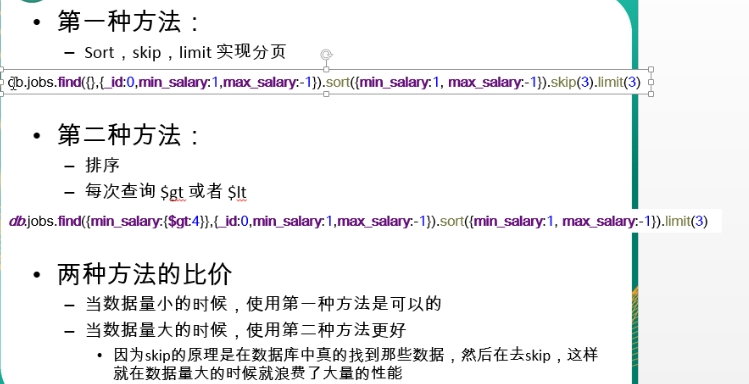

mysql
mysql命令行
进入mysql服务：mysql -uroot -p123456；查询数据库：show databases；应用表：use db_name；查询表：show tables；查询表结构：desc table_name
查询语句：select * from t_user where id=3333 and name is null order by desc limit(0,10)
插入语句：insert into t_user values('11','zhangsan','abc123')
修改语句：update t_user set name='lisi' where name='zhangsan'
删除语句：delete from t_user where password='123445'
外查询： select stu_name,tea_name from student,teacher where student.id=teacher.stu_id and stu_name like '张_'
分组查询：select jod_id ,sum (salary) as summer from employees where salary>5000 group by job_id having summer>30000 order by summer desc
子查询：select * from employees where salary>(select salary from employees where last_name='Abel')
事务
概念：一组逻辑操作单元，使数据从一种状态变换到另一种状态。
mongodb
mongodb基本概念
是一个非关系型数据库，是一个基于分布式文件存储的数据库，由c++编写，是非关系数据库中最丰富、最像关系数据库的产品
database（数据库）>collection（表）>document（列）
mongodb的每一个document都有_id字段，ObjectId是_id的默认类型，是一个24位的字符串（时间戳、机器、PID、计数器）
mongodb命令行
查询所有数据库show dbs，删除当前数据库：db.dropDatabase(),查看当前使用的数据库：db.getName(),切换数据库：use db_name
创建一个集合：db.createCollection('name'),得到当前db的所有集合：show collections,删除集合：db.collectionNames.drop()
导入数据：mongoimport --db db_name --collection coll_name --drop --file file_name
查询语句：db.jobs.find()
添加语句：db.collection.insert({...})
修改语句：db.jobs.update({job_id:XXX},{$set:{salary:100}},{multi:true})
删除语句：db.jobs.remove({status:0})
分页做法：

优点：
高性能、易于部署、易于使用、存储方便
模式自由
支持动态查询
支持复制和故障恢复
支持多种语言
自动处理碎片、支持云计算层次的拓展性
缺点
不适用高度事务性的系统，如银行和会计系统
不适用传统商业智能应用，针对特定问题的BI数据库会对产生高度优化的查询方式。